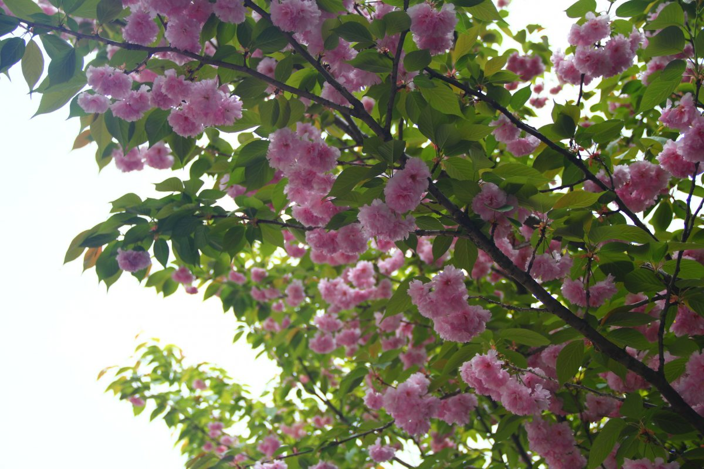
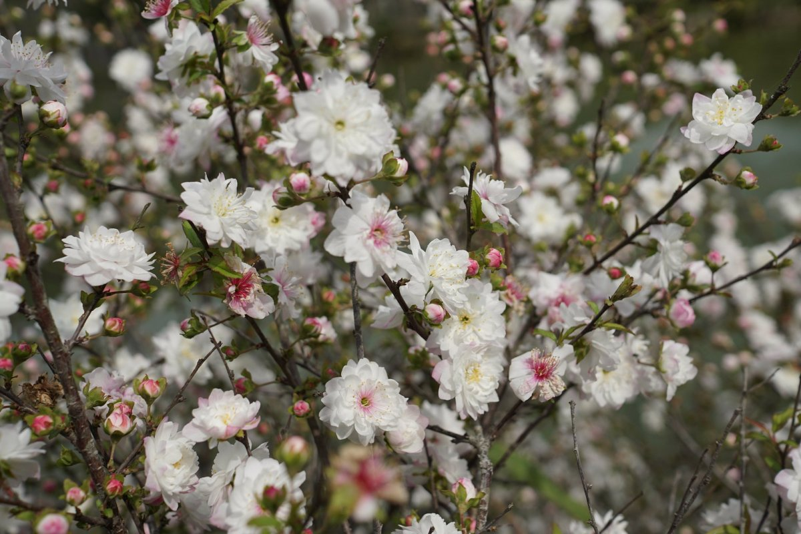
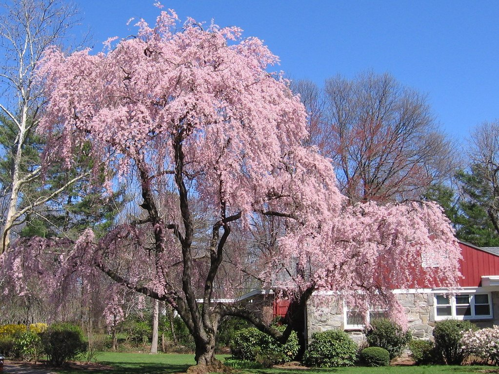

Сакура, чаще всего, ассоциируется с Японией и ее культурой. Пикники под сенью цветущих деревьев давно уже стали неотъемлемым атрибутом встречи весны в Стране восходящего солнца. Финансовый и учебный год здесь начинается с 1 апреля, как раз в это время во многих регионах начинается массовое цветение садов. Поэтому многие значимые моменты в жизни японцев проходят под знаком цветения сакуры. Но отлично растёт сакура и в более прохладных регионах — определённые виды успешно можно выращивать даже в Сибири. наиболее интересных видах и сортах сакуры для разных регионов России расскажем этом в блоге.
Сакура — это обобщённое название.
Оно объединяет несколько видов, которые выращиваются как декоративные растения, имеют мелкие несъедобные плоды или вообще не плодоносят.
В Японии насчитывается более 600 разновидностей сакуры, включая дикие формы и гибриды.
В 1963 году была издана книга «Садовые растения Японии», составленная учёными-дендрологами Токийского университета.
Согласно этому изданию, к сакурам принадлежат следующие виды:

Сезон цветения сакуры в Японии начинается в феврале. Открывает его вишня колокольчатая , которую называют ещё тайваньской вишней или зимней сакурой. Её крупные цикламеново-красные цветки собраны по 2-3 в соцветия или расположены одиночно. Они не раскрываются полностью и поэтому, действительно, выглядят как небольшие колокольчики. Этот высоко декоративный вид морозостоек, однако выдерживает лишь до -18° С. В наших условиях он рекомендуется для выращивания в контейнерной культуре
Вишня эдосская в Японии известна как сомэй ёсино, или токийская вишня.
Эта разновидность сакуры появилась в XIX столетии от скрещивания разных видов.
В настоящее время она получила наибольшее распространение в Стране восходящего солнца.
Сейчас эти красивые деревья можно увидеть в любом уголке Японии.
середине прошлого века цветущие ветви сомэй ёсино стали одним из символов Токио
Как правило, у вишен листья и цветы появляются почти одновременно, но у сомэй ёсино сначала распускаются цветущие бутоны.
Цветы ароматные, с белыми или бело-розовыми лепестками, собраны они по 5-6 штук в соцветии.
Если зайти в рощу сакур в пору цветения, возникает чувство, как будто находишься в нежно-розовом облаке.
Один из древнейших видов сакуры — это ямазакура, или горная сакура .
В отличие от других японских вишен, которые были получены путем скрещивания и гибридизации, ямазакура до сих пор встречается в природе в диком виде.
До середины XIX столетия этот вид был в Японии самым распространённым, пока постепенно его не вытеснили красивые гибридные формы.
Отличительная особенность вида — бледно-розовая окраска лепестков, которые распускаются одновременно с листьями.
Изображения цветов ямазакуры можно увидеть на старинных картинах и предметах японского быта, они также часто используются в современном искусстве.
Как большинство японских сакур, ямазакура расцветает в апреле и цветёт на протяжении двух недель.
Лепестки японской вишни осыпаются очень быстро, но благодаря не одновременному цветению разных видов сакур можно любоваться их красотой в течение нескольких месяцев.
Следом за сомэй ёсино наступает волна цветения ияэзакуры с махровыми белыми или ярко-розовыми цветами, за ней распускаются плакучие ветви сидарезакуры с мелкими махровыми соцветиями нежно-розового цвета.
От малейшего дуновения ветра тысячи тонких лепестков слетают и медленно опадают на землю, образуя настоящий цветочный ковёр.
| Вишня отстропильчатая | Вишня железистая | Вишня короткощетинистая |
|---|---|---|
|  |  |  |
Многие наши соотечественники, соблазняясь цветением сакуры, страстно желают поселить такую красоту на своих участках.
Возможно ли это, и для каких регионов подходят разные виды сакуры?
Оказывается, с некоторыми её разновидностями наши садоводы уже давно знакомы.
Так, на территории бывшего СССР ещё в начале XX века «прописалась» вишня мелкопильчатая.
Большая коллекция растений была доставлена из Японии в адлерский дендропарк «Южные культуры» в далёком 1936 году.
И сейчас этот вид сакуры можно встретить на Черноморском побережье Кавказа, в Крыму (Никитский ботанический сад), в Краснодарском крае, в Ставрополье и на Сахалине.
Успешно зимует она в Киеве, Львове, в Закарпатье, а также на территории Молдовы.
Были попытки выращивания вишни мелкопильчатой в Санкт-Петербурге, Эстонии и Латвии, но ей не слишком подходит климат северных широт.
Вишня мелкопильчатая — быстрорастущий вид, который может достигать до 8-10 м в высоту. Дерево ценится за необычную глянцевую кору и яркие розовые соцветия, которые во время цветения полностью покрывают ветки.
Крона у этой вишни воронковидная; чтобы придать ей красивую форму, на молодых деревьях ежегодно укорачивают новый прирост. Высаживать вишню мелкопильчатую лучше на солнечных, защищённых от ветра участках с плодородной почвой.
Сейчас появились декоративные формы вишни мелкопильчатой, которые представляют особый интерес для садоводов. Есть среди них разновидности с белыми или розовыми махровыми цветами, а также растения с плакучими ветвями.
Многие декоративные формы сакуры относятся к виду вишни остропильчатой. На основе этого вида зарубежные селекционеры вывели ряд махровых сортов, таких как:
К сожалению, в средней полосе России хорошо зимуют только немахровые формы этого вида, остальные рекомендуются для выращивания в контейнерах.
Вишня железистая — небольшой многоствольный кустарник, который достигает в высоту от 0,5 до 1,6 м.Цветы розовые, к концу цветения становятся почти белыми, не опадают в течение 2-х недель.
В дикой природе вишня железистая живёт до ста лет. Хотя родиной этого растения являются Китай, Корея и южная часть Приморья, оно хорошо адаптировалось к климату многих регионов России.
Среди садоводов пользуются известностью декоративные формы этого вида — сорта Альба Плена и Розеа Плена.
Их часто называют махровой вишней, или северной сакурой. Главное достоинство махровых сортов — роскошное цветение, которое начинается в мае и продолжается более трёх недель.
Эти декоративные вишни представляют собой быстрорастущие кустарники высотой 1,2-1,5 м, с округлой кроной.Ветви гибкие, красновато-бурого оттенка, расходятся от центра в разные стороны. Такие растения великолепно выглядят на фоне газона, у воды, в рокариях и альпинариях рядом с камнями.
Вишня короткощетинистая — медленнорастущее дерево с плакучей кроной диаметром до 5 м. Цветёт очень обильно в апреле-мае, до появления листьев. Цветы простые, розового цвета, их диаметр составляет около 2-х см. Этот вид сакуры достаточно морозостойкий, выдерживает морозы до -29°С, но в течение непродолжительного времени.
Предпочитает солнечные участки, но может расти и в небольшом затенении.
Растения красиво выглядят как в одиночных, так и в групповых посадках. Короткощетинистую вишню рекомендуется высаживать в защищенных от ветра местах и делать укрытие на зиму.
В Главном ботаническом саду (г. Москва) растёт махровая вишня, обладающая довольно высокой зимостойкостью.
Белые цветы на длинных цветоножках, собранные в кисти по 3-5 штук, распускаются одновременно с поздними сортами вишни.
Предположительно, эта разновидность появилась в результате скрещивания вишни обыкновенной и махровой формы вишни остропильчатой.
Гибрид бесплодный, но может размножаться корневой порослью и прививкой на другие родственные виды.
Выдающейся зимостойкостью отличается вишня сахалинская (C. sachalinensis), которая достигает в высоту до 8 м. Она отлично зимует в условиях Сибири, Хабаровского края и в европейской части России.
Цветение сахалинской вишни начинается рано, одновременно с абрикосом. Цветки крупные, до 4-х см в диаметре, от бледно-розового до красно-розового оттенка. Две формы этого вида получили статус сорта:

Вишня саржента — кустарник или дерево, достигающее от 6 до 12 м в высоту и 5-8 м в ширину.
Форма молодых насаждений воронковидная, с возрастом их ветви часто принимают горизонтальное положение. Простые одиночные цветы с розовыми лепестками собраны в соцветия по 2-4 шт.
Цветение начинается до распускания листьев, в апреле. В это время деревья, укрытые розово-красными соцветиями, становятся настоящими фаворитами сада. К сожалению, цветение длится недолго, всего около недели, но это не мешает сполна насладиться красотой.
Природный ареал распространения вишни саржента — север Японии, Корея, а также Дальний Восток и Сахалин. Этот вид произрастает преимущественно в горных районах, поэтому он гораздо более вынослив, чем другие окультуренные разновидности сакуры.
Растения можно успешно выращивать в средней полосе России и даже на широте Санкт-Петербурга, если обеспечить им хорошую зимовку с укрытием.

Не стоит забывать и про другие красивоцветущие растения, которые могут стать настоящим украшением наших садов и парков. К таким видам относятся:
Луизеания трёхлопастная (L. triloba) — красивый раскидистый кустарник, который отличается морозостойкостью и устойчивостью к засухе.
В апреле-мае на его ветвях раскрываются многочисленные махровые цветки розового или розово-белого оттенка. Цветение длится до 2-х недель.
Вишня Маака, или Черёмуха Маака (P. maackii) — самый морозоустойчивый вид, который отличается красивой окраской коры — от красновато-оранжевой до золотистой.
Цветы собраны в красивые длинные кисти белого цвета. Этот вид в дикой природе встречается на Дальнем Востоке, в Приморье и Китае.
Дерево легко переносит затопление и засуху, пересадку и стрижку, хорошо растёт в городских условиях.
Войлочная вишня P. tomentosa) — радует своим обильным цветением в мае. Чаще всего, эту культуру высаживают в декоративных изгородях, однако плоды её съедобны, и по вкусу ничуть не уступают плодам вишни обыкновенной.
Войлочная вишня отличается высокой морозостойкостью, неприхотлива к почвам, но плохо переносит затенение.
Культура может хорошо расти и плодоносить всего лишь в течение 10 лет, но омолаживающая обрезка позволяет продлить этот период до 20лет.
Материал взят отсюда в целях обучения HTML :) Тык